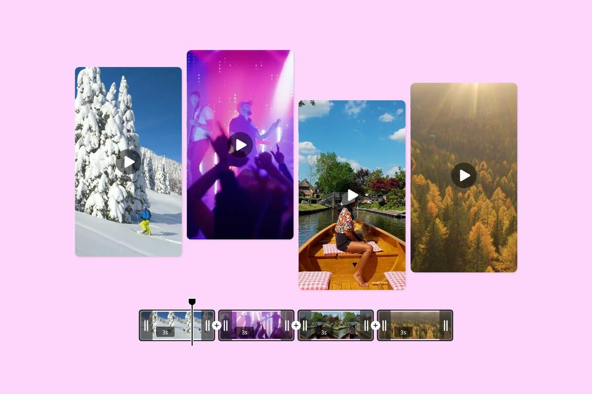
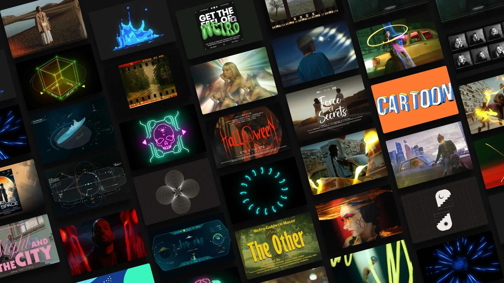

Trendy Fashion Reel
Fast-paced social media cut featuring high-energy sound design, rapid speed ramps, and bold graphic overlays optimized for mobile screens.
Demo reel / showreel
Highlighting transitions, animation, visual effects, narrative pacing, color correction, and custom soundbeds in a single sequence.
Versions
Tailored sequences optimized for specific platforms, hooks, and presentation contexts.
Fast-paced social media cut featuring high-energy sound design, rapid speed ramps, and bold graphic overlays optimized for mobile screens.
A music performance teaser reel focusing on kinetic tracking, high-contrast grading, and transitions synced to complex rhythmic beats.
Quick product-focused showcase clip with clean studio lighting adjustments, text stings, and professional interface graphics overlays.
Reel breakdown
Every second of the showreel is engineered to maintain high watch retention and prove capability.
High-impact pattern interrupts, instant character framing, speed ramps, and upbeat transitions to instantly hook the user's attention.
Showcasing social platform cuts, kinetic motion graphics, commercial branding, dual audio voiceover overlays, and cinematic grades.
Ends on a memorable animated signature logo resolved in 3D, and a clear call-to-action to secure FrameFusion services.
Reel chapters
We divide production work into specialized delivery lanes for maximum engagement.

High-retention social-first edits featuring dynamic voice tracking, expressive emojis, precise jump cuts, and trendy graphic overlays.

Kinetic text layouts, animated interface mockups, SVG vector elements, and premium custom transitional wipes.

Cinematic product placements, narrative brand stories, and promo edits optimized for direct conversion campaigns.
Collaboration Suite
Click any timestamped note to seek the video to that exact frame and place a glowing annotation marker on screen.
Client Feedback Feed
5 NotesWrite a Mock Note